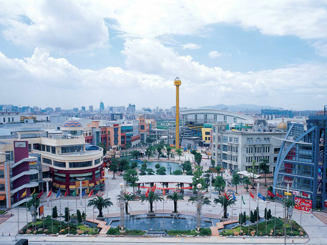

About ASIA

Asia is Earth's largest and most populous continent, located primarily in the Eastern and Northern Hemispheres.it takes up a third of the entire world’s land area. This automatically makes it the most populous continent on the planet. Asia is a continent of uniqueness, fascination and bewilderment all brought about by its cultures, economies, populations, landscapes, plants and animals. The oldest civilizations, highest peaks, populous cities, and tallest buildings are all found in Asia.
- United Arab Emirates
- China
- India
- Japan
- Cambodia
- Pakistan and etc...
Interesting facts about ASIA

Mount everest - Both the highest point on land, Mount Everest (over 8,848 meters above sea level), and the lowest point on land, the Dead Sea (-395meters), are found in Asia. It is continent of varied landscape.

Dongguan - In 2005, a Chinese billionaire built the world’s largest shopping mall in in Dongguan, China. It is so big, it boasts of an indoor rollercoaster. What is even more interesting is that fact that since it opened, 99 percent of the mall has remained unoccupied.

Sahara desert - As the name suggests, the Arabian Desert is located in the Arabian Peninsula. In fact, it actually covers much of the entire Peninsula– it’s nearly 900,000 square miles! It is so large that most people consider it as impassable.
The Arabian Desert shares both political and geographical borders with multiple countries like Saudi Arabia, Yemen (which it borders on the southwest), and Oman (east). The Desert also extends into other neighboring countries such as Kuwait, Jordan, Egypt, and Iraq.
Tribes - Asia is one of the fastest growing economies in the world. That said, it is also home about 44 tribes with absolutely no contact to modern civilization. They live alone, in the jungles of Indonesia and Papua.
To know more about the asia,click here to go